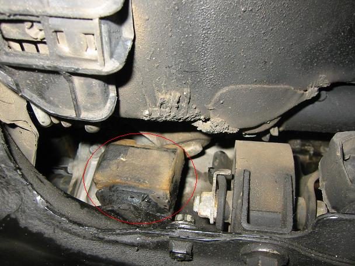
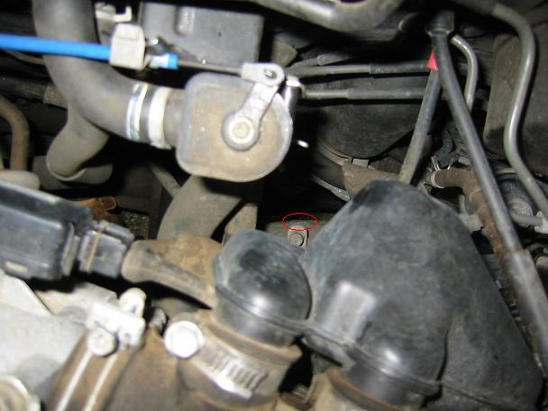
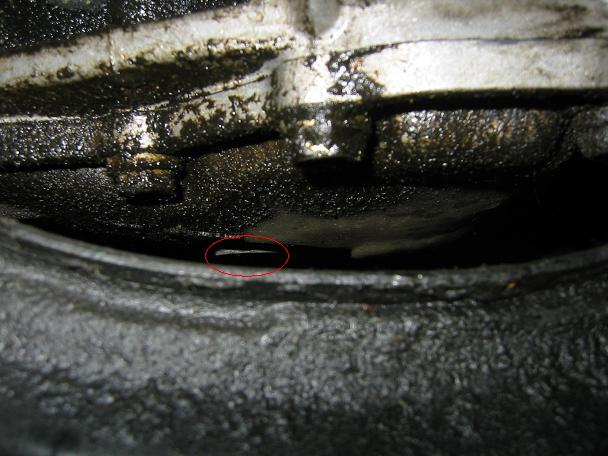
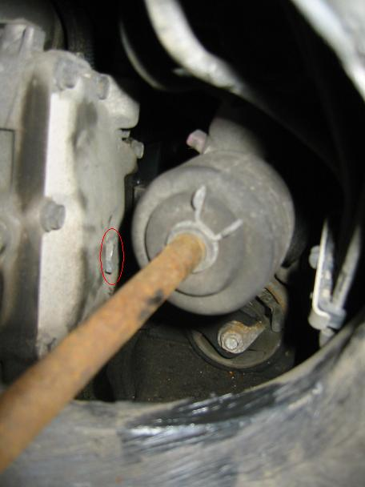
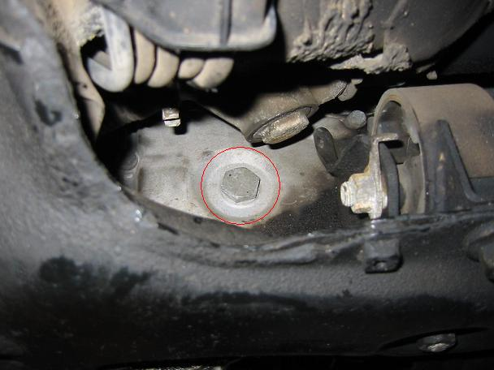
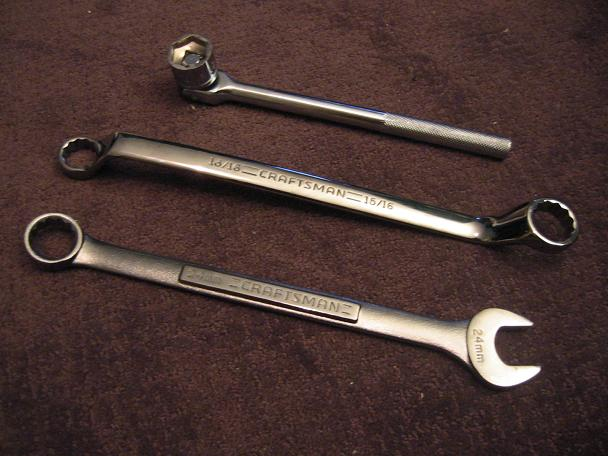
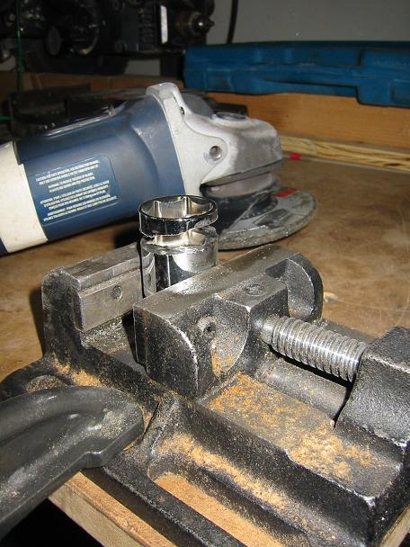
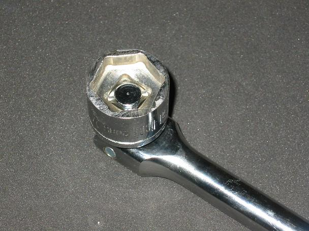

I'd been aware of a slight fluid leak from the gasket between the transmission casing and pan since I bought the car in August. Over time, the leak appeared to worsen and the car was now consuming a fair amount of tranmission fluid, so I decided that it was time to do something about it. The Haynes manual showed that the differential fluid, transmission fluid and the transmission fluid filter should be changed at the 12,000 mile service, and this involves removing the transmission pan and hence replacing the gasket. Since this is a fairly regular service item, you'd expect it to be a straightforward operation. How wrong I was. It took an entire weekend to complete the job and there are acouple of things I wish I'd known before I started. This guide is to help avaoid the same problems in the future and a way for me to vent some frustration at some stunningly bad design.
Armed with a new 10mm allen key, I removed both the drain plugs from the bottom of the transmission and differential casings and drained the fluid. So far so good. When I came to remove the transmission pan, I discovered that the bolts were only finger tight. I suppose that explains why it was leaking fluid. With the transmission pan removed, I replaced the filter, cleaned the gasket surfaces, replaced the gasket and reinstalled the pan.
So far, it had taken less than three hours and all I had to do was refill the transmission and differential with fluid. The transmission is filled through the dipstick spout, which turned out to be a simple but frustrating process. More on that later. The differential is filled through a hole in the rear face of the casing and while it might seem like an easy task, it proved to be quite a challenge.
The Hyanes manual shows a photo of the filler plug in clear view on the vertical rear face of the differntial casing, but I just couldn't find it. I eventually located the plug, almost completely hidden from view by a sub-frame cross-member that the car in the Haynes manual simply doesn't have and a mystery lump of steel. This photo is taken looking towards the front of the car, from the same perspective as the photo in the Haynes manual. The filler plug is right behind the lump of steel bolted to the top of my extra cross-member.
Given that you can't get at the filler plug from behind, I tried some other angles of attack. This is the view of the plug from above, looking down the back of the engine bay. The plug is about two feet from the camera, and the gap you're looking at is way too small to accept an arm.
From directly below, you can see the plug through the gap between the differential casing and the extra cross-member. Sadly, the gap is less that half an inch.
With the front left wheel removed, you can see the plug quite well, but it's a lot further away than it looks.
It looked like there was no other way to get at the plug, so I removed the mystery lump of metal. Unfortunatley my extra cross-member is welded to the body, so removing that would be much more of an undertaking. The plug is now in plain view when viewed from behind.
From this perspective, I managed to measure the plug at 24mm, or perhaps 15/16". Now 24mm sockets aren't readily available, particularly in the US, so I bought a huge adjustable wrench and tried that. Unfortunatley, that proved unsucessful because the Toyota engineers have cleverly recessed the plug into the differential casing. What I needed was a wrench with an angled neck, so off I went to buy a 24mm and 15/16" wrench. The problem is that wrenches with jaws that large are designed for building bridges. You can see my monsterous new wrenches dwarfing my 12" breaker bar in the photo below.
The wrenches proved too big to get at the plug from below, but I could just about get to it from the side. The problem was that the opening through which I was reaching was so small and the wrench so bulky that I couldn't actually turn the plug. Not without removing the steering rod, that is. And that was something I really didn't want to get involved with.
So my only remaining alternative was to buy a 24mm socket. But again, the problem is that tools for fastners that large are themselves huge and there's very little space available between the filler plug and the steering rack casing. I returned from yet another shopping trip with a 24mm socket. I also bought a breaker bar to eliminate the bulk of a ratchet bar, but as I suspected, the socket was way too big. I searched for low-profile sockets and found a few available via mail order, but it didn't look like they'd be small enough. So there was really no option but to take an angle grinder to my socket.
Within a few minutes, I had a super-low profile 24mm socket.
Much to my relief, the socket and breaker bar just about fit in the gap between the plug and the steering rack casing. I managed to turn the bar through the gap between the differential casing and the extra cross-member and suddenly the plug was out.
Unfortunately, my problems were not over, as even with the troublesome plug removed, refilling the differential proved to be tricky. There was no way I could get a bottle to the filler hole, so I went on yet another shopping trip for some plastic tubing and managed to add the fluid that way. The Haynes manual quotes a capacity of 1.5qts, but research online suggested that fluid should be added to the level of the filler hole. The only problem is that it's impossible to get at the filler hole to replace the plug without raising the front of the car. And that means that the differential is at an angle, so the fluid level will be slightly too low, but by this point I was past caring!
All I had to do now was refill the transmission. The dipstick spout, which doubles as the filler pipe, has two bends in it, each of almost 90 degrees, so every time you add more fluid the pipe gets lined with fluid and the dipstick reading is useless until the fluid has drained into the transmission. Unfortunately, this takes about twenty minutes and added to the fact that the fluid has to be at operating temperature when the level is checked, this makes the process extremely slow.
The Haynes manual quotes a capacity of 2.5qts, so I poured in 2qts straight off and then started the long process of checking the level, adding more fluid and waiting for it to drain. In the end it took 3.5qts for the fluid level to reach the middle of the 'hot' range on the dipstick, as suggested by the Haynes manual. Fortunately, I had $100 of (almost) unused tools to return to a number of shops scattered across Boston, so I spent the afternoon driving round town, stopping every 20 minutes to add another egg cup full of transmission fluid.
So after an entire weekend's effort, I finally finished the fluid change, but all is not well. The 'check engine' light now comes on during highway driving or when the weather gets hot, which I presume means that the transmission is over full. I suppose I should have been more suspicious of the 3.5qts it took to fill it. My guess is that the phrase in the Haynes manual that says you should fill to 'between the two hot marks' when the engine is at normal temperature, should read 'between the two pairs of hot and cold marks'.
Either way, research suggests that an over full transmission isn't as bad as the 'do not overfill' warnings written all over the place would have you believe. So now I'm looking for a good way to remove some fluid from the transmission without removing the drain plug and refilling from scratch.
All in all, quite an epic to complete what should be a straightforward task, all thanks to some amazingly bad design.